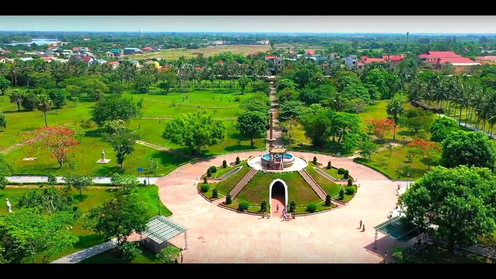

HELLO, IT'S NICE TO MEET YOU
Tỉnh Quảng Trị là một trong những điểm sáng của du lịch miền Trung Việt Nam, nằm ở phía Bắc miền Trung, giữa các tỉnh Thừa Thiên Huế và Quảng Bình. Được biết đến với vẻ đẹp thiên nhiên hùng vĩ, di sản lịch sử và văn hóa đa dạng, Quảng Trị là điểm đến hấp dẫn cho du khách muốn khám phá và trải nghiệm. Với đường biên giới dọc theo sông Bến Hải, nơi chia cắt miền Bắc và miền Nam Việt Nam trong suốt thời kỳ chiến tranh, Quảng Trị mang trong mình một di sản lịch sử đặc biệt. Các di tích như Khe Sanh, đỉnh đèo Hồ Chí Minh, cầu Long Điền và cầu Hien Lương đều là những điểm đến lịch sử đầy cảm xúc, thu hút đông đảo du khách và những ai yêu thích lịch sử.
Khi bước chân vào tỉnh Quảng Trị, bạn không chỉ đặt chân vào một vùng đất phong phú với di sản lịch sử và
thiên nhiên tuyệt vời, mà còn là một cuộc hành trình thưởng thức những hương vị đậm đà và độc đáo của ẩm
thực miền Trung Việt Nam. Quảng Trị, với vị trí nằm giữa biển và núi,
đã tạo ra một nền ẩm thực đa dạng và phong phú, thấm đẫm văn hóa và sự đa dạng địa lý..
Dù là những món ăn đơn giản hay đặc sản, ẩm thực của Quảng Trị đều mang trong mình nét đặc trưng riêng biệt, là hòa quyện của văn hóa, lịch sử và con người nơi đây.
Khám phá ẩm thực Quảng Trị là một trải nghiệm không thể bỏ qua khi bạn đặt chân đến vùng đất này.
Hãy để VN Foods giúp bạn hiểu hơn về văn hoá ẩm thực nơi đây nhé!